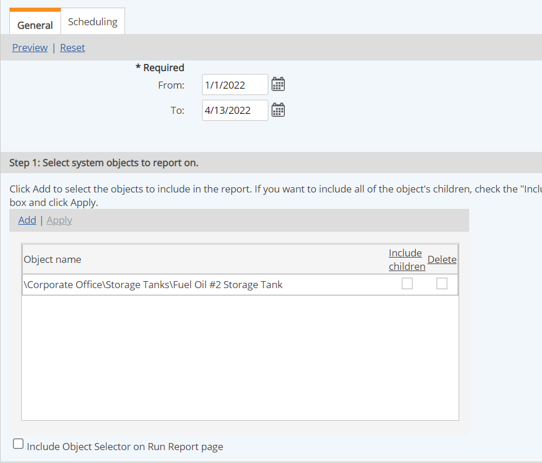
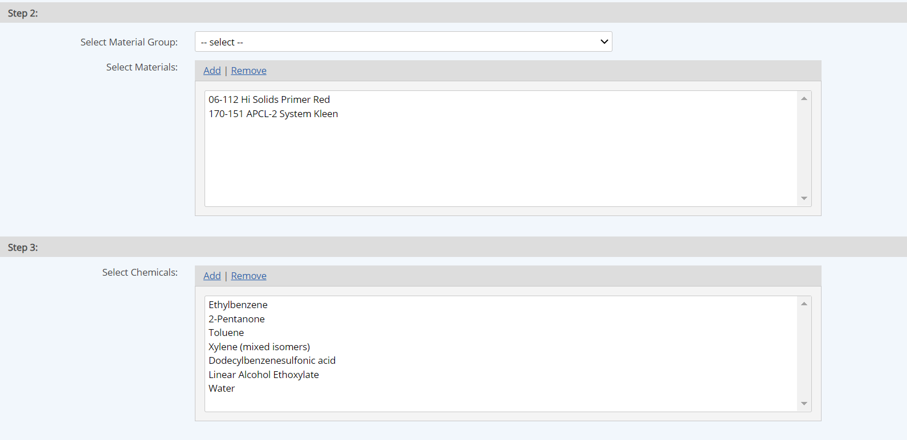
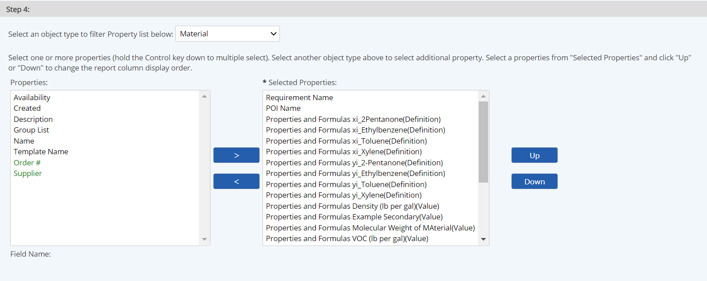

Material Activities reports are used to report on Material Activity calculated data. Data that can be included in this report includes:
In addition, any properties of the system model objects, requirements, and document associations can be included.
This report type can be used in a Combined Report, along with a Data Report, to output the values used in Material Activity calculations that may be needed for reporting purposes.
Results from the Material Activities Report will include 1 row for each Material Activity Calculated requirement under the selected object(s). Thus, if there are 6 MACs under a selected POI, there will be six data rows in the report for each data point.
To create a Material Activities Report:
Select the Facilities/Units/POIs to report on.
These are the parent objects of the Material Activity calcs. To include all child objects, check Include children and click Apply.

Select the Chemicals to include. Chemicals are filtered by the Materials selected.

Select the properties to include in the report.
You can include input values for specific use variables and the values of any Material Activity properties. You can order the properties with the Up and Down buttons, and choose properties to sort on and sorting criteria. You can also filter by property values.
